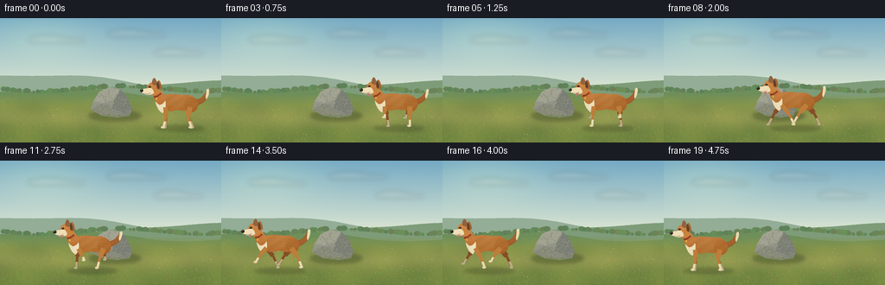
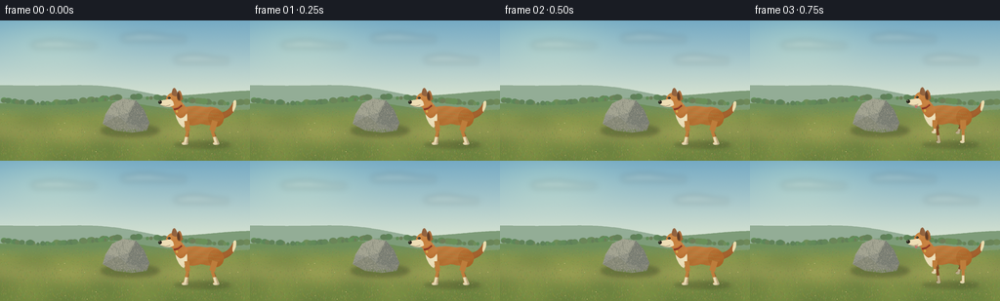

CODING AGENTS AS PIXEL WORLD MODELS
traex/GPT-6.1-Sol · dynamic_spatial_relationship_0004
点击播放 · 原生 RGB 像素
逐轮保存的候选
回放视频、检查图与代码变化。
每份候选均可单独播放。实际图片检查记录在下方工具轨迹中。
候选 01播放与检查图
点击播放 · 原生 RGB 像素


展开代码变化
--- 上一保存版本
+++ 本次保存版本
@@ -0,0 +1,218 @@
+from pathlib import Path
+import math, json
+import numpy as np
+from PIL import Image, ImageDraw, ImageFilter
+import artifact_io
+
+ROOT = Path(__file__).resolve().parent
+SPEC = json.loads((ROOT/'task_spec.json').read_text())
+W,H = SPEC['width'],SPEC['height']
+S=4
+rng=np.random.default_rng(142)
+
+def pts(p): return [(int(x*S),int(y*S)) for x,y in p]
+def ellipse(d,box,fill): d.ellipse(tuple(round(t*S) for t in box),fill=fill)
+def line(d,p,fill,width=1): d.line(pts(p),fill=fill,width=max(1,round(width*S)),joint='curve')
+def bezier(points,n=24):
+ out=[]
+ for t in np.linspace(0,1,n):
+ if len(points)==4:
+ a,b,c,e=points
+ out.append(tuple((1-t)**3*a[k]+3*(1-t)**2*t*b[k]+3*(1-t)*t*t*c[k]+t**3*e[k] for k in [0,1]))
+ else:
+ a,b,c=points
+ out.append(tuple((1-t)**2*a[k]+2*(1-t)*t*b[k]+t*t*c[k] for k in [0,1]))
+ return out
+
+def path(d,segments,fill):
+ pp=[]
+ for q in segments:
+ pp+=bezier(q) if len(q)>2 else q
+ d.polygon(pts(pp),fill=fill)
+
+# Atmospheric meadow, generated from mathematical colour fields.
+y,x=np.mgrid[0:H*S,0:W*S].astype(float); x/=S;y/=S
+noise=rng.normal(0,1,(H*S,W*S))
+arr=np.zeros((H*S,W*S,3),float)
+sky_top=np.array([117,170,196]);sky_low=np.array([222,231,210])
+q=np.clip(y/84,0,1)[...,None]
+arr[:]=sky_top*(1-q)+sky_low*q
+sun=np.exp(-(((x-52)/63)**2+((y-19)/30)**2))
+arr+=sun[...,None]*np.array([20,16,3])
+arr+=noise[...,None]*.7
+bg=Image.fromarray(np.uint8(np.clip(arr,0,255)))
+d=ImageDraw.Draw(bg)
+# Soft cloud wisps.
+cloud=Image.new('RGBA',bg.size); cd=ImageDraw.Draw(cloud)
+for cx,cy,ww in [(62,24,30),(154,17,30),(202,39,24)]:
+ for k in range(6):
+ ellipse(cd,(cx-ww+k*ww/3,cy-2-math.sin(k)*2,cx-ww+k*ww/3+17,cy+4),(252,249,230,45))
+cloud=cloud.filter(ImageFilter.GaussianBlur(3*S));bg=Image.alpha_composite(bg.convert('RGBA'),cloud).convert('RGB');d=ImageDraw.Draw(bg)
+for height,color,amp in [(73,(147,173,150),8),(81,(126,156,121),8),(88,(110,143,90),5)]:
+ hill=[(xx,height+amp*math.sin(xx/62+height*.4)+2*math.sin(xx/25)) for xx in np.linspace(-4,260,140)]
+ d.polygon(pts(hill+[(260,144),(-4,144)]),fill=color)
+# Distant shrubbery soft silhouettes.
+for i in range(115):
+ xx=rng.uniform(-5,261); yy=82+3*math.sin(xx/30)
+ r=rng.uniform(1,4)
+ ellipse(d,(xx-r,yy-r,xx+r,yy+2),(103+int(rng.integers(-10,10)),135+int(rng.integers(-9,10)),88))
+# Foreground sunlit mottled grass field with a subtle worn path.
+a=np.asarray(bg).astype(float)
+for yy in range(88*S,H*S):
+ gy=yy/S
+ blend=min(1,(gy-88)/13)
+ field=np.stack([np.full(W*S,136-(gy-88)*.45),np.full(W*S,151-(gy-88)*.34),np.full(W*S,78-(gy-88)*.28)],axis=1)
+ patch=5*np.sin(x[yy]/19+gy/11)+3*np.cos(x[yy]/9-gy/14)
+ field+=patch[:,None]*np.array([1,.8,.3])
+ pathglow=np.exp(-((gy-(114+3*np.sin(x[yy]/80)))/10)**2)
+ field+=pathglow[:,None]*np.array([19,9,9])
+ a[yy]=a[yy]*(1-blend)+field*blend+noise[yy,:,None]*1.3
+bg=Image.fromarray(np.uint8(np.clip(a,0,255)));d=ImageDraw.Draw(bg)
+for i in range(4500):
+ xx=rng.uniform(0,256);yy=rng.uniform(89,144)
+ depth=(yy-86)/58
+ length=rng.uniform(.4,2.6)*depth
+ cc=(int(rng.uniform(100,164)),int(rng.uniform(120,167)),int(rng.uniform(56,91)))
+ line(d,[(xx,yy),(xx+rng.uniform(-.8,.8),yy-length)],cc,width=.15+.18*depth)
+for i in range(46):
+ xx=rng.uniform(0,256);yy=rng.uniform(95,144)
+ if rng.random()<.5:
+ ellipse(d,(xx,yy,xx+.6,yy+.45),(220,202,135))
+
+# A single rounded angular grey boulder, locked in place for every frame.
+rock_shadow=Image.new('RGBA',bg.size); sd=ImageDraw.Draw(rock_shadow)
+ellipse(sd,(103,107,163,119),(42,54,32,90));rock_shadow=rock_shadow.filter(ImageFilter.GaussianBlur(2.0*S))
+bg=Image.alpha_composite(bg.convert('RGBA'),rock_shadow).convert('RGB')
+rock=Image.new('L',bg.size);rd=ImageDraw.Draw(rock)
+rockpoints=[(105,106),(108,96),(115,85),(126,80),(139,82),(147,91),(153,105),(150,113),(135,115),(118,113)]
+rd.polygon(pts(rockpoints),fill=255)
+# Stone has diffuse volumetric lighting, fine mineral grain, fissures and planes.
+a=np.zeros((H*S,W*S,3),float)
+shade=10*np.sin((x-102)/20)+15*np.clip((112-y)/29,0,1)-.5*(x-127)
+rocknoise=rng.normal(0,2.3,(H*S,W*S))+1.5*np.sin(x*3.4+y*2.1)
+for k,c in enumerate([130,132,119]):a[:,:,k]=c+shade+rocknoise
+rockimg=Image.fromarray(np.uint8(np.clip(a,0,255)));rr=ImageDraw.Draw(rockimg)
+rr.polygon(pts([(115,85),(126,80),(139,82),(133,94),(120,98),(108,96)]),fill=(163,164,146))
+rr.polygon(pts([(133,94),(139,82),(147,91),(153,105),(142,109),(129,105)]),fill=(121,125,115))
+rr.polygon(pts([(105,106),(120,98),(129,105),(135,115),(118,113)]),fill=(135,137,119))
+# Texture speckles and thin discontinuous geological cracks.
+for i in range(1600):
+ xx=rng.uniform(105,153); yy=rng.uniform(80,115)
+ col=rng.choice([0,1,2]); colors=[(171,169,151),(116,121,109),(148,148,128)]
+ ellipse(rr,(xx,yy,xx+rng.uniform(.1,.4),yy+rng.uniform(.1,.35)),colors[col])
+line(rr,[(116,88),(121,91),(122,97),(128,102)],(104,111,99),.35)
+line(rr,[(136,87),(132,93),(132,98)],(101,108,97),.27)
+line(rr,[(143,103),(141,107),(145,110)],(92,102,92),.3)
+rockimg=rockimg.filter(ImageFilter.GaussianBlur(.13*S));bg.paste(rockimg,(0,0),rock)
+d=ImageDraw.Draw(bg)
+for i in range(100):
+ xx=rng.uniform(107,155);yy=rng.uniform(113,117)
+ line(d,[(xx,yy),(xx+rng.uniform(-.7,.7),yy-rng.uniform(1,3))],(101,126,58),.28)
+
+# Dog is drawn in separate shaded anatomical regions at supersampled resolution.
+# Golden sable coat, white chest and muzzle, dark nose, collar, and four articulated legs.
+fur_noise=rng.normal(0,1,(H*S,W*S))
+
+def dog(frame,xc,yc,phase,running):
+ canvas=Image.new('RGBA',(W*S,H*S))
+ def trans(p):return [(xc+a,yc+b) for a,b in p]
+ def region(segments=None,box=None,base=(175,107,48),light=1,texture=True):
+ mask=Image.new('L',canvas.size);md=ImageDraw.Draw(mask)
+ if box:ellipse(md,(xc+box[0],yc+box[1],xc+box[2],yc+box[3]),255)
+ else:path(md,[trans(z) for z in segments],255)
+ bounds=mask.getbbox()
+ if not bounds:return
+ left,top,right,bottom=bounds
+ localx=x[top:bottom,left:right]-xc;localy=y[top:bottom,left:right]-yc
+ v=8*np.cos(localx/22)-.8*localy+3*np.sin(localx*.38+localy*.6)
+ if texture:v+=fur_noise[top:bottom,left:right]*2
+ im=np.zeros((bottom-top,right-left,4),np.uint8)
+ for k,c in enumerate(base):im[:,:,k]=np.clip(c+v*light,0,255)
+ im[:,:,3]=np.asarray(mask)[top:bottom,left:right]
+ canvas.alpha_composite(Image.fromarray(im),(left,top))
+ # Tail curves up behind the rump, with a pale feathery tip.
+ tailwag=1.3*math.sin(frame*.7)
+ region(segments=[[(17,-5),(26,-5),(31,-9),(34,-17+tailwag)],[(34,-17+tailwag),(38,-21+tailwag),(38,-13),(34,-6)],[(34,-6),(29,0),(23,2),(17,1)]],base=(154,89,38))
+ region(segments=[[(34,-17+tailwag),(38,-21+tailwag),(38,-13),(34,-6)],[(34,-6),(32,-8),(34,-13),(34,-17+tailwag)]],base=(225,211,165))
+ # Far legs, slightly deeper shaded. Each lower limb follows a running stride.
+ def limb(front,far):
+ hip=-14 if front else 15
+ if not running:
+ knee=(hip+(1 if front else -3),13)
+ ankle=(hip+(-2 if front else 1)+(2 if far else 0),26)
+ else:
+ angle=phase+(0 if front else math.pi)+(.9*math.pi if far else 0)
+ swing=math.sin(angle)
+ lift=max(0,math.cos(angle))
+ knee=(hip+8*swing,12-3*lift)
+ ankle=(hip+15*swing,25-10*lift)
+ root=(hip,3)
+ mask=Image.new('L',canvas.size);md=ImageDraw.Draw(mask)
+ line(md,trans([root,knee]),255,5 if front else 6)
+ line(md,trans([knee,ankle]),255,3.0)
+ ellipse(md,(xc+ankle[0]-3,yc+ankle[1]-1.5,xc+ankle[0]+1.5,yc+ankle[1]+1.3),255)
+ color=(132,78,37) if far else (189,125,59)
+ layer=Image.new('RGBA',canvas.size,color+(255,));layer.putalpha(mask);canvas.alpha_composite(layer)
+ cd=ImageDraw.Draw(canvas)
+ # Cream stocking ending in an individually shaped paw.
+ mid=((knee[0]+ankle[0])*.5,(knee[1]+ankle[1])*.5)
+ line(cd,trans([mid,ankle]),(187,171,132,255) if far else (232,220,180,255),2.6)
+ ellipse(cd,(xc+ankle[0]-3,yc+ankle[1]-1,xc+ankle[0]+1.4,yc+ankle[1]+1.4),(183,172,137,255) if far else (226,213,174,255))
+ limb(True,True);limb(False,True)
+ # Organic topline, abdomen, shoulder and hindquarters.
+ region(segments=[[(-22,-3),(-22,-13),(-7,-13),(7,-11)],[(7,-11),(18,-13),(26,-5),(22,3)],[(22,3),(16,9),(8,8),(1,6)],[(1,6),(-10,10),(-20,7),(-22,-3)]],base=(175,108,46))
+ region(box=(8,-9,24,9),base=(170,101,40),light=.7)
+ region(segments=[[(-23,-15),(-28,-6),(-24,6),(-17,10)],[(-17,10),(-12,5),(-12,-3),(-17,-14)],[(-17,-14),(-20,-18),(-22,-17),(-23,-15)]],base=(233,220,182),light=.55)
+ limb(False,False);limb(True,False)
+ # Neck leans naturally into the head.
+ region(segments=[[(-21,0),(-26,-3),(-31,-12),(-28,-21)],[(-28,-21),(-25,-24),(-17,-14),(-13,-9)],[(-13,-9),(-13,-3),(-18,1),(-21,0)]],base=(182,111,48))
+ region(box=(-35,-26,-20,-11),base=(191,121,55),light=.6)
+ # Far ear and alert triangular near ear (soft fold rather than cartoon outline).
+ region(segments=[[(-29,-24),(-29,-32),(-25,-34),(-23,-23)],[(-23,-23),(-26,-21),(-29,-24)]],base=(123,76,40))
+ region(segments=[[(-23,-23),(-23,-30),(-19,-30),(-18,-19)],[(-18,-19),(-22,-15),(-25,-19),(-23,-23)]],base=(144,81,31))
+ region(segments=[[(-23,-27),(-21,-26),(-20,-21),(-21,-18)],[(-21,-18),(-24,-19),(-24,-22),(-23,-27)]],base=(94,58,35),light=.3)
+ # Pale lower face and tapered muzzle, black moist nose.
+ region(segments=[[(-33,-19),(-36,-18),(-41,-19),(-42,-15)],[(-42,-15),(-39,-11),(-31,-10),(-27,-13)],[(-27,-13),(-27,-17),(-30,-20),(-33,-19)]],base=(235,218,178),light=.3)
+ cd=ImageDraw.Draw(canvas)
+ ellipse(cd,(xc-43,yc-18,xc-39.4,yc-14.6),(42,37,29,255))
+ ellipse(cd,(xc-42.5,yc-17.6,xc-41.1,yc-16.8),(119,114,94,255))
+ line(cd,trans([(-40,-12.8),(-35,-12.2),(-31,-13.3)]),(83,63,42,255),.5)
+ if running:
+ path(cd,[trans([(-34,-12),(-35,-9),(-32,-8),(-31,-12)])],(191,118,105,255))
+ # Dark eye with warm brow, high contrast pin-point catchlight.
+ line(cd,trans([(-33,-22),(-30,-22.5)]),(219,152,73,255),1)
+ ellipse(cd,(xc-33.3,yc-21.7,xc-30.5,yc-19.4),(65,44,24,255))
+ ellipse(cd,(xc-32.9,yc-21.3,xc-31.0,yc-19.7),(19,22,18,255))
+ ellipse(cd,(xc-32.5,yc-21.1,xc-31.8,yc-20.5),(243,236,206,255))
+ # Red leather collar around neck, with small brass tag.
+ line(cd,trans([(-27,-9),(-23,-10),(-19,-13)]),(131,52,34,255),2.1)
+ line(cd,trans([(-26.5,-9.7),(-23,-10.5),(-20,-12.6)]),(189,85,51,255),.5)
+ ellipse(cd,(xc-25,yc-8,xc-23,yc-5.4),(213,170,73,255))
+ # A few fine directional fur highlights break up smooth outlines.
+ for z in range(55):
+ fx=-12+(z*7.91)%31; fy=-7+(z*4.17)%10
+ if (fx/23)**2+(fy/11)**2<.9:
+ line(cd,trans([(fx,fy),(fx+1.2,fy+.5)]),(199,139,68,95),.23)
+ return canvas
+
+frames=[]
+for i in range(SPEC['frames']):
+ # First three frames establish the relation; the dog then dashes past the rock.
+ if i<=2: xc=205;running=False;phase=0;bob=0
+ elif i<17:
+ u=(i-2)/15
+ # Smooth acceleration and deceleration, nearly constant mid-stride speed.
+ eased=u*u*(3-2*u)
+ xc=205-155*eased;running=True;phase=(i-3)*1.63
+ bob=-1.7+.95*math.cos(phase*2)
+ else: xc=50;running=False;phase=0;bob=0
+ yc=100+bob
+ f=bg.convert('RGBA')
+ sh=Image.new('RGBA',f.size);sd=ImageDraw.Draw(sh)
+ ellipse(sd,(xc-27,124,xc+31,131),(52,54,30,69))
+ sh=sh.filter(ImageFilter.GaussianBlur(1.7*S));f=Image.alpha_composite(f,sh)
+ f=Image.alpha_composite(f,dog(i,xc,yc,phase,running))
+ f=f.convert('RGB').resize((W,H),Image.Resampling.LANCZOS)
+ frames.append(np.asarray(f,dtype=np.uint8))
+artifact_io.save(np.stack(frames),ROOT)
+print('Saved',len(frames),'RGB frames')
可观测工具轨迹
实际执行的命令与返回图片。
命令 1exit 0
/bin/bash -lc 'ls -la && cat prompt.txt && cat GENERATION_RULES.md && cat task_spec.json'
命令 2exit 0
/bin/bash -lc "cat artifact_io.py && python - <<'PY'
import PIL, numpy
print('PIL/numpy available')
PY"命令 3exit 0
/bin/bash -lc "cat > generate.py <<'PY'
from pathlib import Path
import math, json
import numpy as np
from PIL import Image, ImageDraw, ImageFilter
import artifact_io
ROOT = Path(__file__).resolve().parent
SPEC = json.loads((ROOT/'task_spec.json').read_text())
W,H = SPEC['width'],SPEC['height']
S=4
rng=np.random.default_rng(142)
def pts(p): return [(int(x*S),int(y*S)) for x,y in p]
def ellipse(d,box,fill): d.ellipse(tuple(round(t*S) for t in box),fill=fill)
def line(d,p,fill,width=1): d.line(pts(p),fill=fill,width=max(1,round(width*S)),joint='curve')
def bezier(points,n=24):
out=[]
for t in np.linspace(0,1,n):
if len(points)==4:
a,b,c,e=points
out.append(tuple((1-t)**3*a[k]+3*(1-t)**2*t*b[k]+3*(1-t)*t*t*c[k]+t**3*e[k] for k in [0,1]))
else:
a,b,c=points
out.append(tuple((1-t)**2*a[k]+2*(1-t)*t*b[k]+t*t*c[k] for k in [0,1]))
return out
def path(d,segments,fill):
pp=[]
for q in segments:
pp+=bezier(q) if len(q)>2 else q
d.polygon(pts(pp),fill=fill)
# Atmospheric meadow, generated from mathematical colour fields.
y,x=np.mgrid[0:H*S,0:W*S].astype(float); x/=S;y/=S
noise=rng.normal(0,1,(H*S,W*S))
arr=np.zeros((H*S,W*S,3),float)
sky_top=np.array([117,170,196]);sky_low=np.array([222,231,210])
q=np.clip(y/84,0,1)[...,None]
arr[:]=sky_top*(1-q)+sky_low*q
sun=np.exp(-(((x-52)/63)**2+((y-19)/30)**2))
arr+=sun[...,None]*np.array([20,16,3])
arr+=noise[...,None]*.7
bg=Image.fromarray(np.uint8(np.clip(arr,0,255)))
d=ImageDraw.Draw(bg)
# Soft cloud wisps.
cloud=Image.new('RGBA',bg.size); cd=ImageDraw.Draw(cloud)
for cx,cy,ww in [(62,24,30),(154,17,30),(202,39,24)]:
for k in range(6):
ellipse(cd,(cx-ww+k*ww/3,cy-2-math.sin(k)*2,cx-ww+k*ww/3+17,cy+4),(252,249,230,45))
cloud=cloud.filter(ImageFilter.GaussianBlur(3*S));bg=Image.alpha_composite(bg.convert('RGBA'),cloud).convert('RGB');d=ImageDraw.Draw(bg)
for height,color,amp in [(73,(147,173,150),8),(81,(126,156,121),8),(88,(110,143,90),5)]:
hill=[(xx,height+amp*math.sin(xx/62+height*.4)+2*math.sin(xx/25)) for xx in np.linspace(-4,260,140)]
d.polygon(pts(hill+[(260,144),(-4,144)]),fill=color)
# Distant shrubbery soft silhouettes.
for i in range(115):
xx=rng.uniform(-5,261); yy=82+3*math.sin(xx/30)
r=rng.uniform(1,4)
ellipse(d,(xx-r,yy-r,xx+r,yy+2),(103+int(rng.integers(-10,10)),135+int(rng.integers(-9,10)),88))
# Foreground sunlit mottled grass field with a subtle worn path.
a=np.asarray(bg).astype(float)
for yy in range(88*S,H*S):
gy=yy/S
blend=min(1,(gy-88)/13)
field=np.stack([np.full(W*S,136-(gy-88)*.45),np.full(W*S,151-(gy-88)*.34),np.full(W*S,78-(gy-88)*.28)],axis=1)
patch=5*np.sin(x[yy]/19+gy/11)+3*np.cos(x[yy]/9-gy/14)
field+=patch[:,None]*np.array([1,.8,.3])
pathglow=np.exp(-((gy-(114+3*np.sin(x[yy]/80)))/10)**2)
field+=pathglow[:,None]*np.array([19,9,9])
a[yy]=a[yy]*(1-blend)+field*blend+noise[yy,:,None]*1.3
bg=Image.fromarray(np.uint8(np.clip(a,0,255)));d=ImageDraw.Draw(bg)
for i in range(4500):
xx=rng.uniform(0,256);yy=rng.uniform(89,144)
depth=(yy-86)/58
length=rng.uniform(.4,2.6)*depth
cc=(int(rng.uniform(100,164)),int(rng.uniform(120,167)),int(rng.uniform(56,91)))
line(d,[(xx,yy),(xx+rng.uniform(-.8,.8),yy-length)],cc,width=.15+.18*depth)
for i in range(46):
xx=rng.uniform(0,256);yy=rng.uniform(95,144)
if rng.random()<.5:
ellipse(d,(xx,yy,xx+.6,yy+.45),(220,202,135))
# A single rounded angular grey boulder, locked in place for every frame.
rock_shadow=Image.new('RGBA',bg.size); sd=ImageDraw.Draw(rock_shadow)
ellipse(sd,(103,107,163,119),(42,54,32,90));rock_shadow=rock_shadow.filter(ImageFilter.GaussianBlur(2.0*S))
bg=Image.alpha_composite(bg.convert('RGBA'),rock_shadow).convert('RGB')
rock=Image.new('L',bg.size);rd=ImageDraw.Draw(rock)
rockpoints=[(105,106),(108,96),(115,85),(126,80),(139,82),(147,91),(153,105),(150,113),(135,115),(118,113)]
rd.polygon(pts(rockpoints),fill=255)
# Stone has diffuse volumetric lighting, fine mineral grain, fissures and planes.
a=np.zeros((H*S,W*S,3),float)
shade=10*np.sin((x-102)/20)+15*np.clip((112-y)/29,0,1)-.5*(x-127)
rocknoise=rng.normal(0,2.3,(H*S,W*S))+1.5*np.sin(x*3.4+y*2.1)
for k,c in enumerate([130,132,119]):a[:,:,k]=c+shade+rocknoise
rockimg=Image.fromarray(np.uint8(np.clip(a,0,255)));rr=ImageDraw.Draw(rockimg)
rr.polygon(pts([(115,85),(126,80),(139,82),(133,94),(120,98),(108,96)]),fill=(163,164,146))
rr.polygon(pts([(133,94),(139,82),(147,91),(153,105),(142,109),(129,105)]),fill=(121,125,115))
rr.polygon(pts([(105,106),(120,98),(129,105),(135,115),(118,113)]),fill=(135,137,119))
# Texture speckles and thin discontinuous geological cracks.
for i in range(1600):
xx=rng.uniform(105,153); yy=rng.uniform(80,115)
col=rng.choice([0,1,2]); colors=[(171,169,151),(116,121,109),(148,148,128)]
ellipse(rr,(xx,yy,xx+rng.uniform(.1,.4),yy+rng.uniform(.1,.35)),colors[col])
line(rr,[(116,88),(121,91),(122,97),(128,102)],(104,111,99),.35)
line(rr,[(136,87),(132,93),(132,98)],(101,108,97),.27)
line(rr,[(143,103),(141,107),(145,110)],(92,102,92),.3)
rockimg=rockimg.filter(ImageFilter.GaussianBlur(.13*S));bg.paste(rockimg,(0,0),rock)
d=ImageDraw.Draw(bg)
for i in range(100):
xx=rng.uniform(107,155);yy=rng.uniform(113,117)
line(d,[(xx,yy),(xx+rng.uniform(-.7,.7),yy-rng.uniform(1,3))],(101,126,58),.28)
# Dog is drawn in separate shaded anatomical regions at supersampled resolution.
# Golden sable coat, white chest and muzzle, dark nose, collar, and four articulated legs.
fur_noise=rng.normal(0,1,(H*S,W*S))
def dog(frame,xc,yc,phase,running):
canvas=Image.new('RGBA',(W*S,H*S))
def trans(p):return [(xc+a,yc+b) for a,b in p]
def region(segments=None,box=None,base=(175,107,48),light=1,texture=True):
mask=Image.new('L',canvas.size);md=ImageDraw.Draw(mask)
if box:ellipse(md,(xc+box[0],yc+box[1],xc+box[2],yc+box[3]),255)
else:path(md,[trans(z) for z in segments],255)
bounds=mask.getbbox()
if not bounds:return
left,top,right,bottom=bounds
localx=x[top:bottom,left:right]-xc;localy=y[top:bottom,left:right]-yc
v=8*np.cos(localx/22)-.8*localy+3*np.sin(localx*.38+localy*.6)
if texture:v+=fur_noise[top:bottom,left:right]*2
im=np.zeros((bottom-top,right-left,4),np.uint8)
for k,c in enumerate(base):im[:,:,k]=np.clip(c+v*light,0,255)
im[:,:,3]=np.asarray(mask)[top:bottom,left:right]
canvas.alpha_composite(Image.fromarray(im),(left,top))
# Tail curves up behind the rump, with a pale feathery tip.
tailwag=1.3*math.sin(frame*.7)
region(segments=[[(17,-5),(26,-5),(31,-9),(34,-17+tailwag)],[(34,-17+tailwag),(38,-21+tailwag),(38,-13),(34,-6)],[(34,-6),(29,0),(23,2),(17,1)]],base=(154,89,38))
region(segments=[[(34,-17+tailwag),(38,-21+tailwag),(38,-13),(34,-6)],[(34,-6),(32,-8),(34,-13),(34,-17+tailwag)]],base=(225,211,165))
# Far legs, slightly deeper shaded. Each lower limb follows a running stride.
def limb(front,far):
hip=-14 if front else 15
if not running:
knee=(hip+(1 if front else -3),13)
ankle=(hip+(-2 if front else 1)+(2 if far else 0),26)
else:
angle=phase+(0 if front else math.pi)+(.9*math.pi if far else 0)
swing=math.sin(angle)
lift=max(0,math.cos(angle))
knee=(hip+8*swing,12-3*lift)
ankle=(hip+15*swing,25-10*lift)
root=(hip,3)
mask=Image.new('L',canvas.size);md=ImageDraw.Draw(mask)
line(md,trans([root,knee]),255,5 if front else 6)
line(md,trans([knee,ankle]),255,3.0)
ellipse(md,(xc+ankle[0]-3,yc+ankle[1]-1.5,xc+ankle[0]+1.5,yc+ankle[1]+1.3),255)
color=(132,78,37) if far else (189,125,59)
layer=Image.new('RGBA',canvas.size,color+(255,));layer.putalpha(mask);canvas.alpha_composite(layer)
cd=ImageDraw.Draw(canvas)
# Cream stocking ending in an individually shaped paw.
mid=((knee[0]+ankle[0])*.5,(knee[1]+ankle[1])*.5)
line(cd,trans([mid,ankle]),(187,171,132,255) if far else (232,220,180,255),2.6)
ellipse(cd,(xc+ankle[0]-3,yc+ankle[1]-1,xc+ankle[0]+1.4,yc+ankle[1]+1.4),(183,172,137,255) if far else (226,213,174,255))
limb(True,True);limb(False,True)
# Organic topline, abdomen, shoulder and hindquarters.
region(segments=[[(-22,-3),(-22,-13),(-7,-13),(7,-11)],[(7,-11),(18,-13),(26,-5),(22,3)],[(22,3),(16,9),(8,8),(1,6)],[(1,6),(-10,10),(-20,7),(-22,-3)]],base=(175,108,46))
region(box=(8,-9,24,9),base=(170,101,40),light=.7)
region(segments=[[(-23,-15),(-28,-6),(-24,6),(-17,10)],[(-17,10),(-12,5),(-12,-3),(-17,-14)],[(-17,-14),(-20,-18),(-22,-17),(-23,-15)]],base=(233,220,182),light=.55)
limb(False,False);limb(True,False)
# Neck leans naturally into the head.
region(segments=[[(-21,0),(-26,-3),(-31,-12),(-28,-21)],[(-28,-21),(-25,-24),(-17,-14),(-13,-9)],[(-13,-9),(-13,-3),(-18,1),(-21,0)]],base=(182,111,48))
region(box=(-35,-26,-20,-11),base=(191,121,55),light=.6)
# Far ear and alert triangular near ear (soft fold rather than cartoon outline).
region(segments=[[(-29,-24),(-29,-32),(-25,-34),(-23,-23)],[(-23,-23),(-26,-21),(-29,-24)]],base=(123,76,40))
region(segments=[[(-23,-23),(-23,-30),(-19,-30),(-18,-19)],[(-18,-19),(-22,-15),(-25,-19),(-23,-23)]],base=(144,81,31))
region(segments=[[(-23,-27),(-21,-26),(-20,-21),(-21,-18)],[(-21,-18),(-24,-19),(-24,-22),(-23,-27)]],base=(94,58,35),light=.3)
# Pale lower face and tapered muzzle, black moist nose.
region(segments=[[(-33,-19),(-36,-18),(-41,-19),(-42,-15)],[(-42,-15),(-39,-11),(-31,-10),(-27,-13)],[(-27,-13),(-27,-17),(-30,-20),(-33,-19)]],base=(235,218,178),light=.3)
cd=ImageDraw.Draw(canvas)
ellipse(cd,(xc-43,yc-18,xc-39.4,yc-14.6),(42,37,29,255))
ellipse(cd,(xc-42.5,yc-17.6,xc-41.1,yc-16.8),(119,114,94,255))
line(cd,trans([(-40,-12.8),(-35,-12.2),(-31,-13.3)]),(83,63,42,255),.5)
if running:
path(cd,[trans([(-34,-12),(-35,-9),(-32,-8),(-31,-12)])],(191,118,105,255))
# Dark eye with warm brow, high contrast pin-point catchlight.
line(cd,trans([(-33,-22),(-30,-22.5)]),(219,152,73,255),1)
ellipse(cd,(xc-33.3,yc-21.7,xc-30.5,yc-19.4),(65,44,24,255))
ellipse(cd,(xc-32.9,yc-21.3,xc-31.0,yc-19.7),(19,22,18,255))
ellipse(cd,(xc-32.5,yc-21.1,xc-31.8,yc-20.5),(243,236,206,255))
# Red leather collar around neck, with small brass tag.
line(cd,trans([(-27,-9),(-23,-10),(-19,-13)]),(131,52,34,255),2.1)
line(cd,trans([(-26.5,-9.7),(-23,-10.5),(-20,-12.6)]),(189,85,51,255),.5)
ellipse(cd,(xc-25,yc-8,xc-23,yc-5.4),(213,170,73,255))
# A few fine directional fur highlights break up smooth outlines.
for z in range(55):
fx=-12+(z*7.91)%31; fy=-7+(z*4.17)%10
if (fx/23)**2+(fy/11)**2<.9:
line(cd,trans([(fx,fy),(fx+1.2,fy+.5)]),(199,139,68,95),.23)
return canvas
frames=[]
for i in range(SPEC['frames']):
# First three frames establish the relation; the dog then dashes past the rock.
if i<=2: xc=205;running=False;phase=0;bob=0
elif i<17:
u=(i-2)/15
# Smooth acceleration and deceleration, nearly constant mid-stride speed.
eased=u*u*(3-2*u)
xc=205-155*eased;running=True;phase=(i-3)*1.63
bob=-1.7+.95*math.cos(phase*2)
else: xc=50;running=False;phase=0;bob=0
yc=100+bob
f=bg.convert('RGBA')
sh=Image.new('RGBA',f.size);sd=ImageDraw.Draw(sh)
ellipse(sd,(xc-27,124,xc+31,131),(52,54,30,69))
sh=sh.filter(ImageFilter.GaussianBlur(1.7*S));f=Image.alpha_composite(f,sh)
f=Image.alpha_composite(f,dog(i,xc,yc,phase,running))
f=f.convert('RGB').resize((W,H),Image.Resampling.LANCZOS)
frames.append(np.asarray(f,dtype=np.uint8))
artifact_io.save(np.stack(frames),ROOT)
print('Saved',len(frames),'RGB frames')
PY
python generate.py"命令 4exit 0
/bin/bash -lc "command -v ffmpeg || true; ls -lh pixels.npz index.html inspection.png; python - <<'PY'
import numpy as np
from PIL import Image
from pathlib import Path
files=sorted(Path('frames').glob('*.png'))
assert len(files)==20
assert all(Image.open(p).mode=='RGB' and Image.open(p).size==(256,144) for p in files)
print('Verified: 20 RGB frames at 256Ã144.')
PY"视觉工具实际返回图片 1

保存候选 1 份；完成命令 4 次；可验证图片返回 1 张。原始 API 响应与完整日志保留在本地。